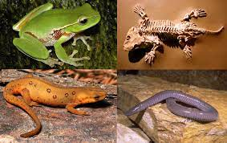
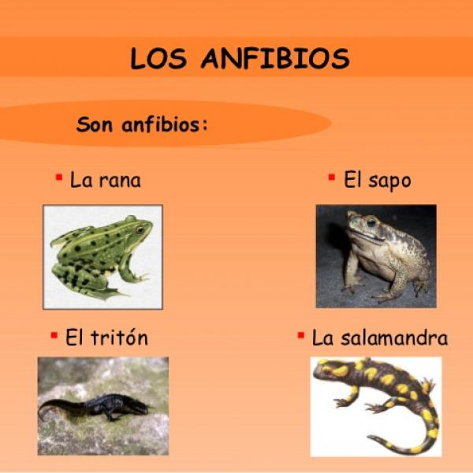

 Hemisus es un género de anfibios anuros compuesto por nueve especies endémicas del África subsahariana. Es el único género dentro de la familia Hemisotidae. El grupo forma un clado (Afrobatrachia) que incluye a las familias Brevicipitidae, Hyperoliidae y Arthroleptidae.
 Los anfibios (Amphibia) son una clase de vertebrados anamniotas (sin amnios, como los peces), tetrápodos, con respiración branquial durante la fase larvaria y pulmonar al alcanzar el estado adulto. se distinguen de todo el resto de vertebrados por sufrir transformaciones durante su subdesarrollo. Este cambio drástico se denomina metamorfosis.
Los anfibios fueron los primeros vertebrados en adaptarse a una vida semiterrestre. Muy pocas especies de anfibios secretan a través de la piel sustancias tóxicas. Estas sustancias constituyen un sistema de ataque frente a los depredadores. Los anfibios pueden encontrarse en prácticamente todo el mundo. Sólo se ausentan en las regiones árticas y antárticas y en los desiertos más áridos pero son sumamente abundantes en todas partes del mundo, en especial aquellas con condiciones óptimas para su desarrollo.
Cumplen un rol ecológico vital respecto al transporte de energía desde el medio acuático al terrestre, así como a nivel trófico al alimentarse en estado adulto, en gran medida, de artrópodos y otros invertebrados. Algunas especies de anfibios secretan a través de la piel sustancias altamente tóxicas. Estas sustancias constituyen un sistema de defensa frente a los depredadores.